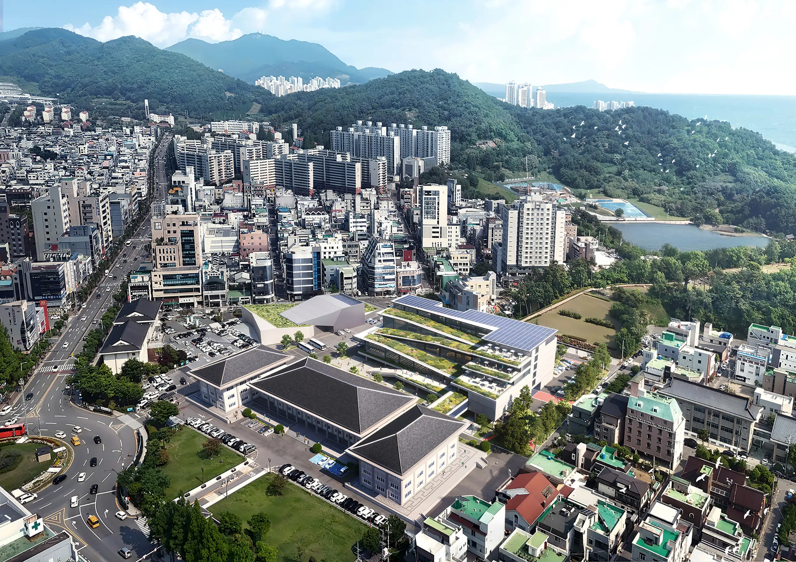
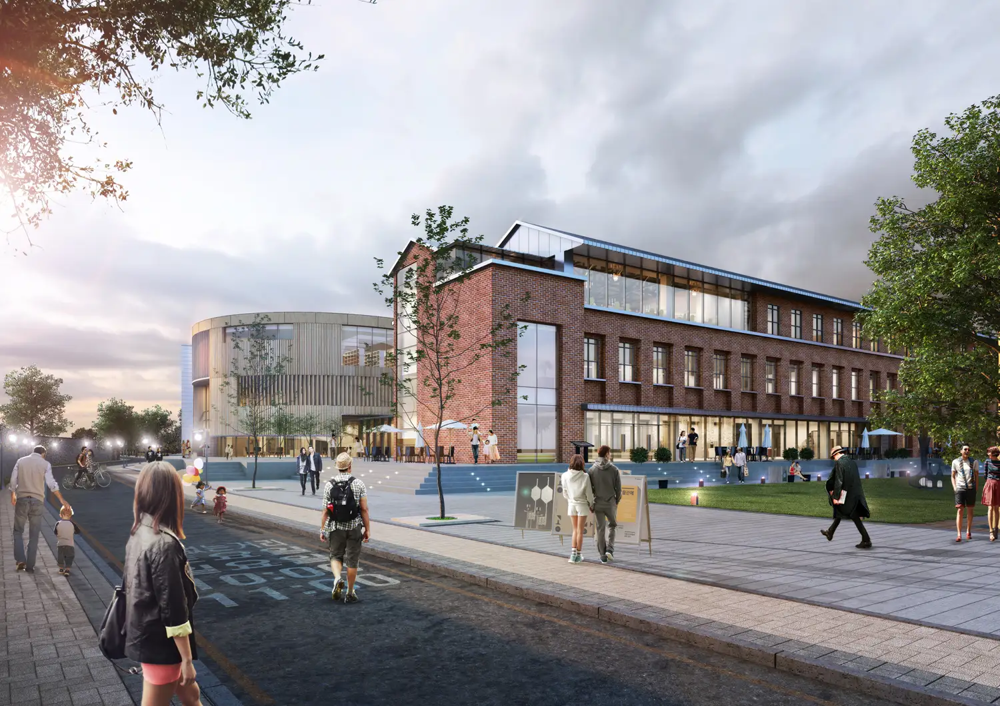
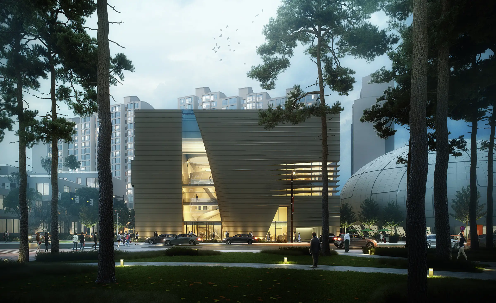

Architecture 건축설계
구축을 넘어선 공공의 풍경 Weaving Site Potential and Collective Memory
우리의 건축은 단순히 새로운 형태를 대지 위에 세우는 행위를 넘어, 땅이 품고 있는 잠재력을 발견하고 도시의 새로운 질서를 제안하는 서사적 작업에서 출발합니다. 건축은 시간의 흐름 속에 놓여 있는 매개체이며, 따라서 우리는 그 땅이 가졌던 과거의 영광과 상처, 그리고 사라진 자취를 조경이나 구조적 장치로 재현하여 '집단적 기억'을 직조하는 방식을 택합니다. 이는 기존의 흔적을 지우는 '타불라 라사(Tabula Rasa)'적 개발에 저항하며 과거의 형상을 존중하는 '반복'과, 그 안에 현대적 기능을 불어넣는 '차이'를 통해 공간에 영속성을 부여하는 과정입니다. 이러한 접근은 건축물이 복잡한 도심 경관 속에서 소외되지 않고, 대지의 맥락과 유기적으로 공명하며 고유한 장소성을 획득하게 만듭니다.
Our architecture begins as a narrative undertaking that transcends the mere act of erecting new forms upon a site; instead, it discovers the latent potential of the land and proposes a new urban order. We view architecture as a medium situated within the flow of time. Thus, we choose to weave 'collective memory' by reproducing the past glories, scars, and vanished traces of the land through landscape and structural devices. This is a process of granting permanence to a space through 'repetition'—respecting past forms while resisting 'Tabula Rasa' developments that erase existing traces—and 'difference'—infusing them with modern functionality. Such an approach ensures that a building is not alienated within a complex urban landscape but acquires a unique sense of place by resonating organically with its context.

우리는 개별 건축물을 독립된 오브제로 보지 않고, 도시의 보행 네트워크와 공공 영역을 확장시키는 거대한 '도시적 시스템'의 일부로 간주합니다. 특히 경사지나 고립된 대지 환경에 대응하기 위한 전략을 도입하거나, 단절되었던 도시의 동선을 회복시키고 가로 수준에서의 시각적 개방성을 확보하는 등의 건축적 장치를 제안해왔습니다. 대지의 경계와 길의 연속성으로부터 도출된 유연한 선형은 주변 환경과 조화를 이루는 도시적 스퀀스의 일부가 되어 시간의 변화를 입체적으로 투영합니다. 우리는 화려한 랜드마크를 지향하기보다, 의미 있는 '비어 있음(Void)'과 투명성을 통해 시민들이 스스로를 투영하고 소속감을 느낄 수 있는 공공의 토대를 마련하는 데 집중합니다.
We do not view individual buildings as isolated objects, but rather as integral parts of a vast 'urban system' that expands pedestrian networks and the public realm. Specifically, we propose architectural devices and strategies to respond to sloped or isolated site environments, restoring disconnected urban circulation and ensuring visual openness at the street level. Flexible linearity, derived from site boundaries and the continuity of the streets, becomes part of an urban sequence that harmonizes with its surroundings, reflecting the passage of time in a multi-dimensional way. Rather than aiming for flashy landmarks, we focus on establishing a public foundation where citizens can project themselves and feel a sense of belonging through meaningful 'voids' and transparency.

건축의 진정한 지속가능성은 진보된 기술과 예술적 직관이 완벽하게 결합하는 지점에서 구현됩니다. 우리는 건물 외피에 도입된 '에너지 완충 장치'나 건축화된 통합적 설비 시스템과 같은 기술적 성취를 조형적 언어로 승화시켜, 환경에 능동적으로 반응하는 '자연스럽게 똑똑한(Naturally Smart)' 건축을 지향합니다. '솔리드(Solid)'와 '보이드(Void)'의 명확한 대비는 건물의 조형적 힘을 유지하는 동시에 내부의 활력을 도시로 전달하는 희소한 장치가 됩니다. 불필요한 장식을 배제하고 재료 본연의 물성과 정교한 비례를 통해 구축된 우리의 건축은, 단순한 물리적 내구성을 넘어 시간이 흐를수록 깊이를 더하며 도시의 역사와 함께 호흡하는 영광스러운 장소로 남을 것입니다.
True sustainability in architecture is realized at the point where advanced technology and artistic intuition perfectly coalesce. We sublimate technical achievements—such as 'energy buffers' integrated into the building envelope or architecturally integrated utility systems—into a formal language, aspiring toward 'naturally smart' architecture that responds actively to the environment. The clear contrast between 'solid' and 'void' serves as a rare device that maintains the building’s formal power while simultaneously transmitting internal vitality to the city. By excluding unnecessary ornamentation and building through the inherent materiality of resources and refined proportions, our architecture transcends simple physical durability; it becomes a glorious place that gains depth over time and breathes alongside urban history.
